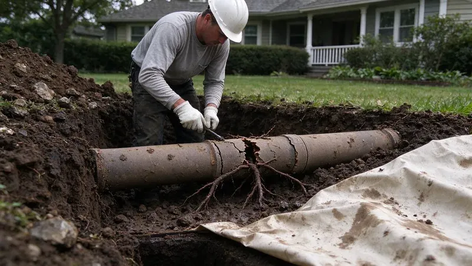

Trouble You Cannot See
Every house has at least two buried lines, the water service coming in from the meter and the sewer lateral going out to the main or a septic tank. Most homeowners never think about either until something goes wrong. In most places, the homeowner owns them. From the meter or the property line to the house, repairs on those lines usually fall on the owner, not the city, and a sewer lateral in an older home can easily be 50 or 60 years old.
What Damages Underground Pipe
Tree Roots
Tree roots go after moisture and warmth, and a sewer line leaking a little vapor at a joint is both. A hair-thin root slips into a clay or cast iron joint and grows into a mat that catches paper. Willows and silver maples are notorious, but almost any tree within 30 feet of the line can get in eventually. Cutting roots only buys time.
Ground Movement
Low, wet ground in many areas also means slow drainage, which matters for sewer lines and septic fields alike.
Soil that settles, swells or washes out puts uneven load on a buried pipe. Clay and cast iron crack under that load, while PVC tends to sag into a belly. A belly holds standing water and waste, so drains slow down and back up even though the pipe is technically intact, and a camera inspection is the only way to see it from inside. Poor trench compaction does the same.
Age and Corrosion
Newer houses and manufactured homes typically rely on PEX or CPVC supply lines with PVC drains.
Pipe material tells you what to expect. Cast iron drains corrode from the inside, build up scale, and eventually lose the bottom of the pipe. Orangeburg, a tar-paper pipe used in some homes into the 1970s, deforms and collapses, galvanized water services rust shut over decades, polybutylene supply lines fail at the fittings, and soft copper can pinhole in aggressive water. Clay tile holds up fine until roots find the joints.
Weather and Ground Conditions
Water heaters in hot garages and attics wear faster, so their condition is worth checking during any plumbing visit.
Freezing and thawing heave the ground, drought pulls soil away from pipe, and heavy rain saturates backfill and lets it shift. Water service lines buried too shallow take the worst of it. Most codes want the service below the local frost line, and lines put in by a previous owner sometimes sit a foot or more higher than that, which shows up as a break every few hard winters in the same spot. Heavy trucks over a line do damage too.
How Underground Pipe Gets Fixed Now
The repair starts with a diagnosis. We run a sewer camera from a cleanout to find the break and check the rest of the line. A locator on the surface marks depth and position, water service leaks get found with acoustic listening and a pressure test, and that information decides whether one small hole can fix it or the whole line should be replaced. Guessing wastes the yard.
Pipe lining, also called cured-in-place pipe, fits a felt liner soaked in epoxy resin into the old pipe and inflates it against the walls. After a few hours of curing, it becomes a pipe with no joints inside the old pipe. Lining works best on cracked or root-damaged pipe that has not collapsed. Most jobs need only one or two access points, usually the cleanout and sometimes a small pit near the street, and the yard and driveway stay intact. A sagging belly cannot be lined out.
Pipe bursting replaces the line outright. A hydraulic winch pulls a bursting head through the old pipe, splitting it apart while dragging new HDPE pipe in behind it. It handles collapsed or badly deteriorated pipe that lining cannot fix, and it needs two small pits, one at each end. The same method works on a buried water line.
Open trenching still has its place. Shallow lines under open lawn are often cheapest to dig. A belly that needs regrading or a line broken in several places can call for digging, and the tech should explain why a trench beats trenchless on your specific job before quoting it. Ask to see the camera footage.
Cost and timing depend on depth and access. Most residential trenchless jobs finish in a day or two. Permits and a utility locate come first, since the 811 call has to clear before anyone digs a pit, and that alone can add a few business days to the schedule. Build that wait into the timeline.
When to Call a Professional
Watch for a wet strip in the yard, a sinkhole over the sewer path, sewage smell outside, and drains that all slow down at once. Any of those deserves a camera inspection soon. DFM Plumbing runs camera inspections and line locates across Mississippi, and booking one at (601) 265-9260 gets you footage of the inside of your line plus a written note on where the trouble is and how deep. Early root intrusion can sometimes be handled with a cleaning and a follow-up check.
Need a licensed plumber in Mississippi?
DFM Plumbing answers 24/7 and offers same-day service across Mississippi.